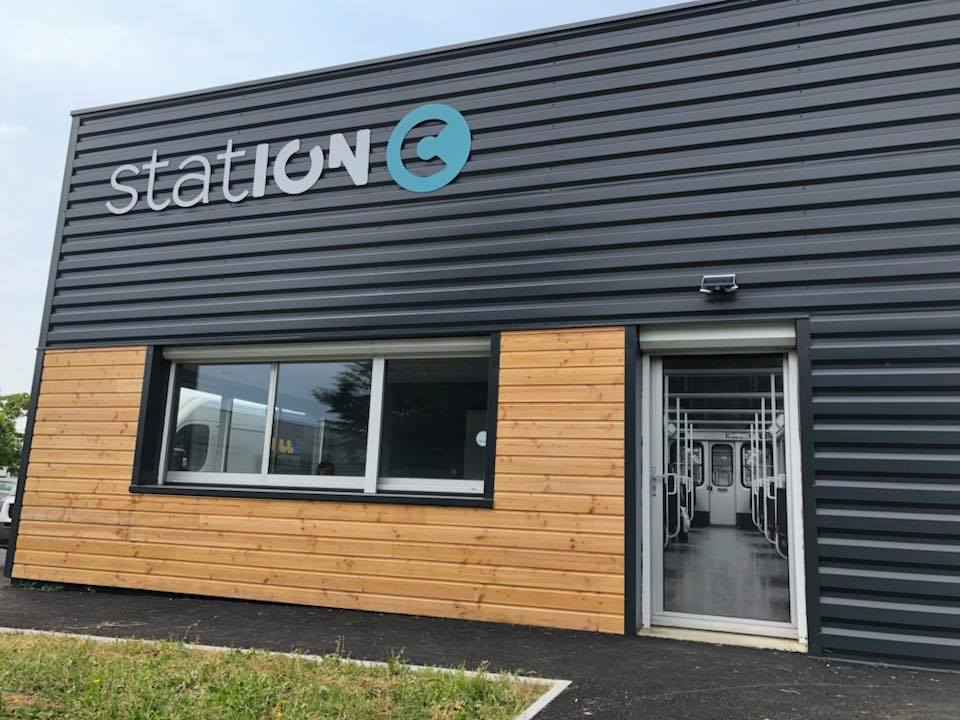
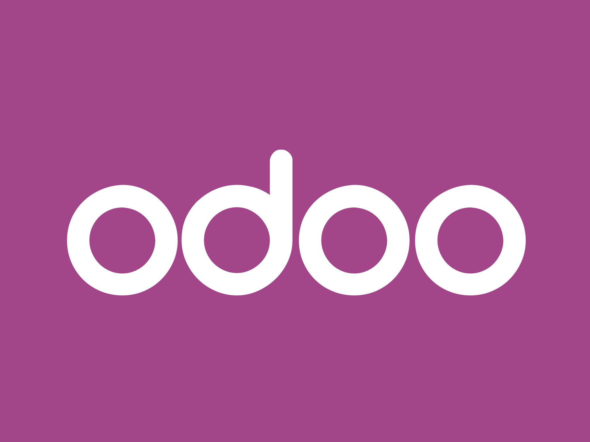
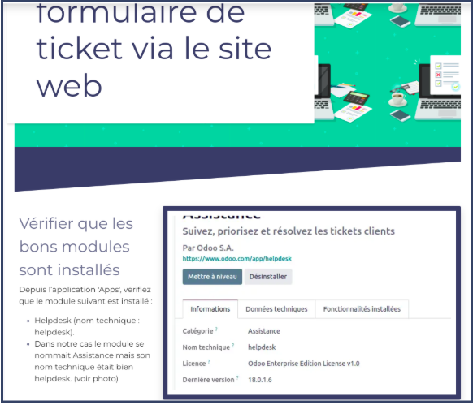
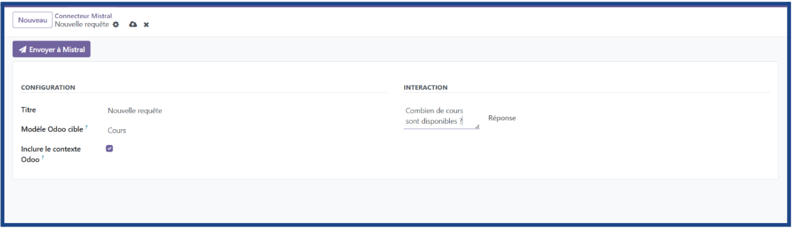

KARA Technology · Blue Metrics
KARA Technology est une société informatique basée à Angers (49), spécialisée dans le conseil, l'intégration de solutions ERP et l'accompagnement à la transformation numérique des entreprises. Elle intervient notamment sur l'ERP open source Odoo, qu'elle déploie, configure et personnalise pour ses clients.
En parallèle, KARA Technology développe Blue Metrics, une solution d'analyse et de pilotage de la performance destinée aux équipes métier. C'est dans ce contexte que j'ai réalisé mon premier stage de 6 semaines, en participant au développement de modules Odoo et à la mise en place d'un agent d'intelligence artificielle.

ERP Odoo — Développement de modules
- Modules personnalisés — développement en Python et XML pour répondre aux besoins spécifiques des clients (champs, vues, règles métier)
- Personnalisation de vues — modification des formulaires, listes et tableaux de bord dans l'interface Odoo
- Formations utilisateurs — accompagnement des utilisateurs finaux à la prise en main des modules développés

Extrait d'une formation utilisateur réalisée sous Odoo
IA — Module connecteur Mistral
- Module connecteur Odoo × Mistral — développement d'un module permettant d'interroger l'IA directement depuis Odoo, en s'appuyant sur la base de données de l'entreprise
- Intégration API Mistral AI — connexion à l'API pour générer des réponses contextualisées à partir de questions en langage naturel

Interface du module : question posée en langage naturel, réponse générée par l'IA
Automatisation — Agent de veille avec Make
- Agent de veille automatisé — scénario Make déclenchant chaque matin à 09h30 la collecte, le traitement et l'envoi d'une synthèse de veille technologique
- Pipeline complet — Iterator → requête HTTP → parsing HTML → Mistral AI (résumé) → Google Sheets (archivage) → envoi e-mail

Scénario Make : collecte web, synthèse IA, archivage et envoi automatique